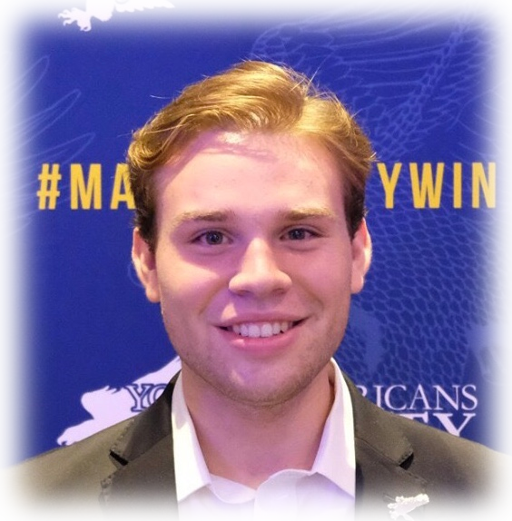

|  |
|
Media Hits
"The duty of the press is to print the truth and raise hell" — The Chicago Times
|
Nyte
A web app for student organizations at high schools and universities to broadcast events to their members
|
MarkovNextGen
A lightning-fast .NET library for generating simple Markov chains
|
Monika
Co-operative project with Jahrbuch
|
KRUII co-hosted a weekly talk radio show and occasionally served as a fill-in disk jockey on various music shows |
National MS SocietyIn 2005, I established charMS (Communities Helping ARrest MS), raising $250,000 for MS research. I secured a team sponsorship from local business owners Jax LLC, resulting in a scholarship fund which raised over $300,000 for students in MS-affected families. |
Young Americans for LibertyI'm currently serving as YAL's North Carolina state chair. Responsibilities include expanding membership, identifying State Representative candidates, and mentoring future leaders in the movement. |
Peters for CongressI interned with Peters for Congress through November 2018, assisting with voter outreach, data analysis and media-related activities. |
Odyssey of the MindI competed on an Odyssey of the Mind team for six years, served as a Sponteneous coach for three years, and as head coach of an elementary school team that advanced to state finals. |